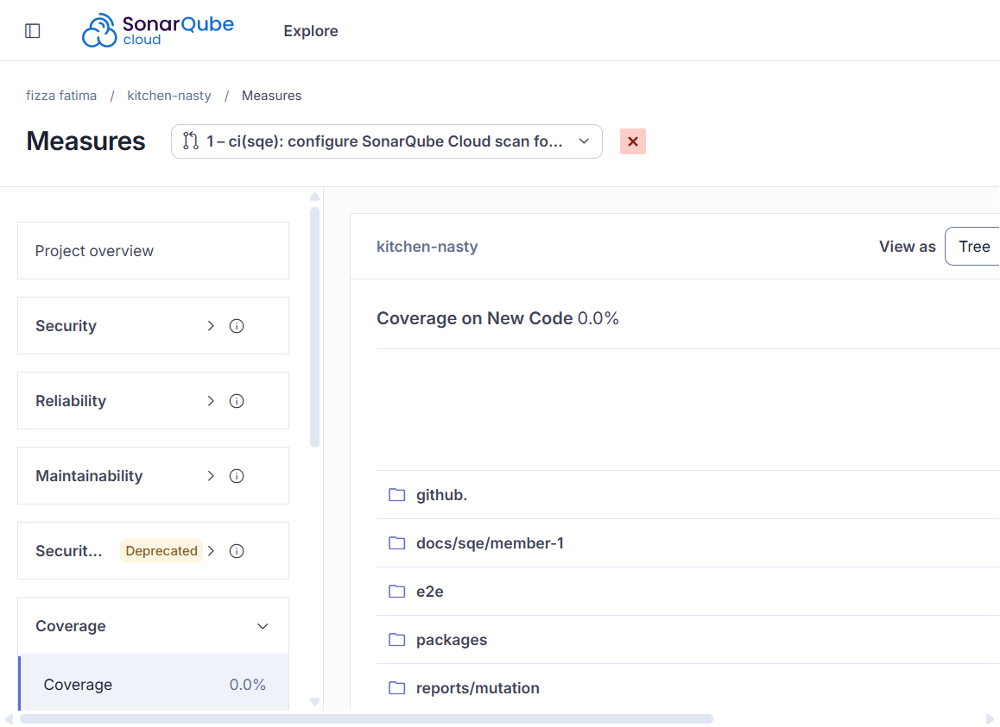
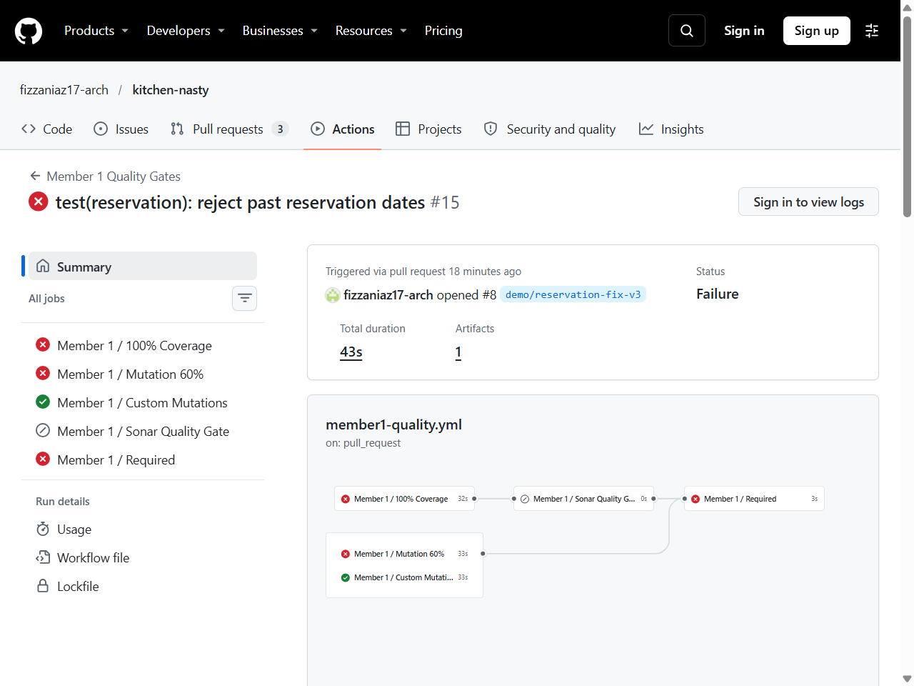
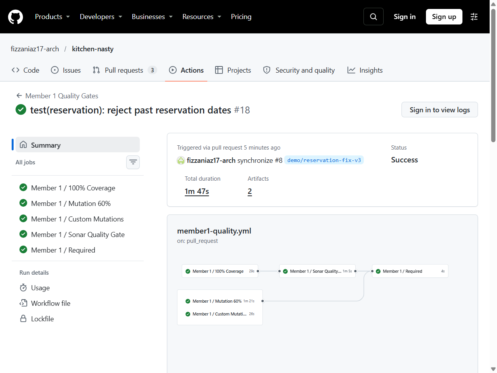

Member 1: Static analysis, white-box testing, mutation testing, CI quality gates, risks and exit criteria
| Criterion | Actual evidence | Status |
|---|---|---|
| Reproducible tooling | Vitest 4.0.18, coverage-v8 4.0.18, Stryker 9.1.1, SonarQube Cloud scan action v7 | Pass |
| White-box suite | 59/59 passed at PR #8 application-code head across reservation/table controller functions | Pass |
| Coverage target | 59 tests; 100% statements, branches, functions, and lines | Pass |
| Mutation historical/follow-up | Historical 63.31%; prior 57-test run 65.47%; current 59-test run at 80f720c: 365 killed, 199 survived, 64.78%, 0 no coverage, 1 timeout | Pass (60%) |
| SonarQube Cloud | Main and PR #8 quality gates passed. An approved function-only scan indexed one TypeScript file (CLI 8.0.1.6346, analysis 0e966ce9); the measures API returned 403 | Gate pass; value pending Browse access |
| Browser use cases | 10/10 Playwright flows passed across two Member 1 use cases | Pass |
| CI and PR evidence | PR #8 application-code head 03d977c and report commit 1c56e71 pass required gate, Sonar, CI, and Mobile Builds; PR #6 remains intentionally open and blocked | Pass; PR #8 review pending |
| ID | Rule | Technique | Evidence |
|---|---|---|---|
| M1-BR-01 | Party size is an integer from 1 through 50. | Equivalence partitions and boundaries 0, 1, 50, 51 | Rejected cases assert no write; accepted boundaries assert Prisma payload. |
| M1-BR-02 | Creation requires a customer principal and active location. | MCC and MC/DC | Unauthenticated, staff, missing location, inactive location, and valid customer rows. |
| M1-BR-03 | Partial update changes supplied fields only and supports explicit null. | Data-flow and branch testing | Invalid, missing record, omitted fields, null fields, and all supplied fields. |
| M1-BR-04 | Availability needs an active sufficiently large unreserved table. | Compound condition and conflict partitions | Required query, default party size, fully occupied and available slots. |
| M1-BR-05 | Reservation creation rejects a date before today with 400 and Cannot reserve in the past. | Date boundary regression | PR #8 test proves the old implementation proceeded to the location lookup; the fix rejects before database access. |
The graph models updateReservation. Each optional check's true edge applies its assignment; the false edge bypasses it. Both paths rejoin at the next check.
updateReservation. The approved function-only Sonar analysis at source SHA 03d977c indexed one TypeScript file (SonarScanner CLI 8.0.1.6346, analysis 0e966ce9-1b82-4100-9fe6-3a2c959a7d6a); metric retrieval returned HTTP 403. No Sonar value is claimed.Location rejection is !location || !location.isActive. Let A = location exists and B = active.
| Case | A exists | B active | B executes? | Reject | Test |
|---|---|---|---|---|---|
| MCC-01 | F | N/A | No (short-circuit) | T | Missing location |
| MCC-02 | T | F | Yes | T | Inactive location |
| MCC-03 | T | T | Yes | F | Accepted boundary cases |
MC/DC pairs: A uses MCC-01 versus MCC-03, acknowledging B is structurally unavailable when A is false. B uses MCC-02 versus MCC-03. B is masked in MCC-01 by JavaScript short-circuiting.
| Rule | Complete MCC rows | MC/DC independence pairs |
|---|---|---|
| M1-BR-01 | Non-number; non-integer; below 1; valid 1–50; above 50 | Number: non-number/valid. Integer: decimal/valid. Lower: 0/1. Upper: 50/51. |
| M1-BR-02 | Not customer; customer+missing location; customer+inactive; customer+active | Customer: reject/accept. Exists: missing/active. Active: inactive/active. |
| M1-BR-03 | Two rows (omitted/supplied) for each of six independent unary field decisions | Each field's omitted/supplied rows form its pair; null is proven supplied. |
| M1-BR-04 | Time mismatch/no ID; mismatch/ID; match/no ID; match/ID | Time: mismatch+ID/match+ID. ID: match+no ID/match+ID. Final slot: zero/one remaining table. |
The complete feasibility tables, masking notes, and test mapping are provided in mcc-mcdc.md.
80f720cc750accccb0e46004dbe8fe3d8e67928c, npm run coverage:member1 executed 59 tests: 59 passed, 0 failed. Both selected controllers achieved 100% statements, 100% branches, 100% functions, and 100% lines. The final PR head's required coverage job also passed.reservation.controller.ts and table.controller.ts, and the generated V8 report lists no uncovered lines.
Figure 1. Browser-rendered Vitest HTML coverage report generated from the Member 1 suite.

Figure 2. SonarQube Cloud reports 0.0% coverage on 94 new lines to cover for PR #1, analyzed at SHA f51b0c7c63ead6740d6de8b47024093df4f5b86f. This new-code measure is distinct from the 100% Member 1 controller coverage above.

Figure 3. Browser-rendered Stryker HTML report from the genuine pre-strengthening baseline.
| Class | Representative surviving behavior | Reason | Required action |
|---|---|---|---|
| Weak assertion | Response object removed or success boolean flipped | Some rejection tests assert status/write prevention but not the entire body | Add exact response assertions |
| Missing test | Prisma where object removed | Several tests do not assert lookup/update query identity | Assert exact Prisma call payload |
| Missing test | Rename condition forced false | Changed-name unique and duplicate rows are not both implemented | Add both feasible MCC rows |
| Missing test | isActive default true changed to false | No successful create-table test omits isActive | Assert persisted default |
| Equivalent candidate | Mutation in output field not observable under current mocked return | Production behavior may be determined by mocked Prisma response | Confirm invariant before classifying equivalent |
The fifteen historical survivors are classified in mutation-analysis.md. At code commit 80f720cc750accccb0e46004dbe8fe3d8e67928c, the 59-test rerun killed 365 mutants, survived 199, timed out 1, had no no-coverage mutants, and scored 64.78%, above the unchanged 60% threshold. The earlier 57-test score of 65.47% remains historical. Two application-specific custom mutants were both killed; the final PR #8 mutation and custom-mutation jobs passed.
Two Member 1 use cases define and automate a main flow, two alternatives and two exceptions each. npm run test:e2e:member1 passed all 10 flows in 24.6 seconds using installed Chrome and deterministic synthetic route state.
PR #8's test-only commit d405f83 was the red phase: the exact assertion expected Cannot reserve in the past but received Location not found or inactive; the workflow recorded 58 passed and 1 failed. The production fix was committed separately as 80f720c. An initial repository CI run then exposed a stale integration fixture using 2026-03-15; commit 03d977c moved it to a date one day ahead. At application-code head 03d977cf352699dbfca919c4209056c1116e3818, Member 1 / Required, coverage, mutation, custom mutation, Sonar Quality Gate, repository integration/unit/E2E/security/lint/build checks, and Mobile Builds all passed. The report/evidence commit 1c56e71 also passed Member 1, repository CI, and Mobile Builds.
Links: PR #8, red workflow, failing assertion job, green Member 1 workflow, and green repository CI.

Figure 4. Authentic failed PR #8 Member 1 run `45007936801` at red commit `d405f83`; the specific failed assertion is preserved in the coverage job log linked in evidence-index.md.

Figure 5. Authentic passing PR #8 Member 1 run `45008817893` at application-code head `03d977c`; all five Member 1 jobs are green.

Figure 6. PR #6 merge box: `Member 1 / Required` is marked Required and failed; the merge action is disabled. PR #6 is the intentional blocked demo, not the release state of main.

Figure 7. PR #6 Actions failure at the intentional party-size regression commit.
PR #6 references: open PR, latest failed Member 1 run, and passing main run at 00f0449.
PR #1 was analyzed at f51b0c7c63ead6740d6de8b47024093df4f5b86f (base d6af7237e9569ebeab19ccab375362f9d144e25e). The Member 1 LCOV artifact was downloaded and verified before the scan; Sonar processed the report and uploaded the analysis. The action exited with code 3 only after checking the failed quality gate.

Figure 8. Historical SonarQube Cloud project Overview warned that the main branch had not been analyzed yet, before the later passing main analysis at 00f0449.

Figure 9. Historical PR #1 quality gate failure at SHA f51b0c7c63ead6740d6de8b47024093df4f5b86f: reliability C (required A), security C (required A), new-code coverage 0.0% (required at least 80.0%), and duplicated lines 79.0% (allowed at most 3.0%).

Figure 10. Historical GitHub Actions Sonar job for the analyzed SHA. Coverage download and the LCOV existence check passed; the scan step failed after Sonar reported the failed quality gate.
At the time of the historical PR #1 scan, the Sonar Overview warning was 'main' branch has not been analyzed yet. That PR scan completed; no scanner error said that a first main analysis was required. The PR #1 summary then reported 19 new issues, and its 0.0% coverage measure applied to 94 new lines to cover (including 94 uncovered lines in e2e), distinct from the 100% controller coverage result. The later main analysis at 00f0449 passed.
That PR #1 gate failure is historical. The main quality gate passed after PR #5 at SHA 00f0449039601f0a5de1fd39e4d3365e9bbc0b77; PR #8's Sonar Quality Gate job passed at application-code head 03d977c and again on report commit 1c56e71. A function-only scratch analysis was uploaded successfully, but the measures API returned HTTP 403 with the configured analysis credential; an account/token with Browse access is needed to read the function metric. See scratch workflow run 45012955478 and evidence/sonar-function-scratch-status.txt. PR #8 is open for review and has not been merged; no direct push to main was performed. Earlier local Docker attempts are historical and are detailed in quality-report.md.
| Highest risk | L×I | Mitigation | Linked criterion |
|---|---|---|---|
| Double booking because creation does not enforce conflicts | 4×5 = 20 Critical | Transactional conflict check and concurrency tests | EC-01 coverage |
| Invalid table assignment capacity/location/activity | 4×5 = 20 Critical | Assignment validation and MCC/boundary tests | EC-01, EC-02 |
| Status lifecycle is not enforced | 4×4 = 16 High | Transition map and state tests | EC-01 |
| Past reservations remain creatable on main until PR #8 merges | 3×4 = 12 High | PR #8 fixes the rule and has passing checks; keep main status distinct until review/merge | EC-04 |
| ID | Target | Actual | Status |
|---|---|---|---|
| EC-01 | 100% statements and branches | 59 tests pass; 100% statements, branches, functions, and lines at fix commit 80f720c; final PR gate passes at 03d977c | Pass |
| EC-02 | Mutation score at least 60%; historical survivors classified | Current 59-test run 64.78% (365 killed, 199 survived, 1 timeout); prior 65.47% retained historically | Pass |
| EC-03 | Sonar quality gate passes; separately obtain function-level complexity | Main run 45004176915 and PR #8 run 45008817893 pass; scratch analysis 0e966ce9 indexed one TypeScript file; measures API returned 403; manual updateReservation V(G)=9 | Gate pass; value pending Browse access |
| EC-04 | Required GitHub checks and repository CI pass; preserve PR #6 | PR #8 application-code head 03d977c and report commit 1c56e71 pass required, CI, and Mobile Builds; PR #6 remains open/unmerged and blocked | Pass on PR #8; review/merge pending |
The past-date API defect is proven red-to-green on PR #8, and its final Member 1 and repository CI checks pass. Main remains at the previously verified SHA until PR #8 is reviewed and merged. PR #6 remains a separate intentional blocked demo. The main quality gate passes. A function-only Sonar scan has now been completed, but its complexity measure remains unavailable because the measures API returned HTTP 403; the next step is to read it with Browse access. The manual value remains 9, and the controller-wide Sonar metric is not substituted.